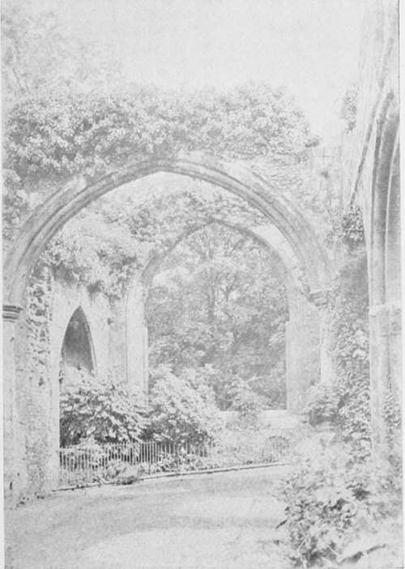

Weak Development
Description
This section is from the book "The Barnet Book Of Photography", by Herts Barnet. Also available from Amazon: The Barnet Book Of Photography.
Weak Development
Before giving my method of weak development I wish to say a word on the rationale of the process. The too prevalent method of developing a bromide print by flooding it with a strong developer and snatching it out immediately it shows signs of over-development is against all the principles of efficient and economical technique, clearly showing a want of the most elementary scientific knowledge of the process.
Since, as I have shown, the complete reduction of the silver is entirely dependent on a sufficiency of the reducing, or developing agent, providing we have that, then the duration of development will be in direct ratio with the strength in percentage by volume. Hence, if we can regulate the speed of development at will, and eventually produce precisely the same state of reduction quickly or slowly, it is obvious what advantage is gained when we consider the question of individuality and certainty of results.
The speed of development being a personal matter, the strength of the developers given may be modified as desired, but as the effect of the exposure can only be seen on development, it is very important that the image be first brought up to such a stage, that, should there have been any error in exposure either way, the silver has been reduced to such a state that no material damage has been done; while at the same time the scale of gradation is visible to such an extent that we can see the whole, or nearly the whole, length of it. This state I have called the "first stage of development." Fig. 9 shows a print at this stage. In practice it very much resembles a platinotype print before development. Fig. 10 shows the completed print.
Fig. 9. - First Stage.
Fig. 10. - Completed Print.
The developers given for the negative work are recommended, but the normal solution is just half the strength in both cases, made by doubling the quantity of water.
To bring a print to the " first stage," dilute the developer at least six times, preferably ten times, using the smallest volume possible. For a 30 x 24 I use six ounces. Now exercise a little patience. Correct exposure is indicated in the " first stage " by a visibility of the whole of the scale of gradation, with detail in shadows and high lights, and even in this weak and ghostlike state there is a certain amount ofcrispness. Stop development by rinsing the print, and decide upon its future state. I might say here that correct exposure is technically known as that which will give the most perfect rendering of the gradation of the negative, with the greatest depth of tone; but it does not necessarily follow that it will give the best print; this is a personal equation.
If weak development be continued the print will pass through all intensities, from shadows of dove grey to deepest black, governed of course by the quality of the negative.
Development may be stopped at any stage, and a stronger solution applied selectively to accentuate where desired, but if this be done, the print must not be developed to its full limit, otherwise the accentuated parts would be lost.
Depth of tone is obtained at will by strengthening the developer. There is one peculiarity in the development of bromides, which should be carefully noted and allowed for. When a print is fully developed and immersed in the fixing-bath, a considerable clearing action takes place, rendering the intensity much greater. But with an under-developed print this does not happen, or but very slightly, and a knowledge of the peculiarity can only be obtained with experience; the intensity of the print should be judged by transmitted light.
Under-exposure in the "first stage "is indicated by an absence of detail in the high lights, and a much shorter scale of gradation. Now, although I have previously said that under-exposure is hopeless, it is nevertheless a fact that with weak development you can secure a satisfactory print which has been under-exposed to the extent of 30 per cent., when with rapid development the result would be very indifferent.
Continue with the weak solution till the print seems to " hang fire," and then strengthen very slightly ; if it still hangs back, strengthen more, and if there is no further development you may add as much as you like but you will get no further reduction.
The use of bromide plays such an important part in development that it is advisable to omit it from the compound developer and add it when required from a dropping bottle ; the manipulation is much more delicate and certain. It is unnecessary to use any in the " first stage " developer with the formulae given, except in hot weather. On no account use it with prints that have been much underexposed. In all cases it has the effect of steepening the scale of gradation if the development is stopped within the limit of reduction.
Over-exposure is indicated in the " first stage" by a complete visibility of the whole scale of gradation and all detail, but of a very flat appearance, there being little difference between shadow and high light. If checked at this stage, over-exposure to the extent of 100 per cent, may be controlled and rectified to give a satisfactory print. If very excessive add three or four drops of bromide to your weak developer, and continue for a little ; now strengthen your developer in stages from quarter, half, three-quarter, to normal, adding three drops of bromide per ounce of developer at each stage, and continue development with this till the desired depth of tone is obtained.
Slight over-exposure, and control during development is at once the safest and best method of producing a bromide print. In my own practice I invariably over-expose to the extent of from 5 to 10 per cent, on the estimation obtained from the trial slips. At the " first stage " the developer is increased to one-sixth normal with one drop of bromide, then in stages as required up to the normal, with the addition of one drop of 10 per cent, bromide at each stage. With regard to individuality you can work your will with the print, having it completely under control.
Sponge development may be applied with equal facility.
Exceptionally hard negatives and those which have been under-exposed, containing great contrasts, may be successfully treated in the following way.
Obtain the correct exposure—that is, the exposure necessary to just print through the highest light—and develop with a normal developer to the limit of reduction.
Having found this, increase it for the intended print by three or four times. Develop with a normal solution diluted from six to ten times till it has attained nearly the desired intensity. This at first will entail some careful judgment, but a little practice will soon enable one to perform it with accuracy.
Fix and wash the print, and then bleach and intensify as described under intensification.
■ By this means negatives used for any other printing process_may be equally well adapted to bromide work. In this process prints should be judged by reflected light, not by transmitted light.
Continue to:
Tags
paper, print, negative, exposure, lens, development, camera, focus